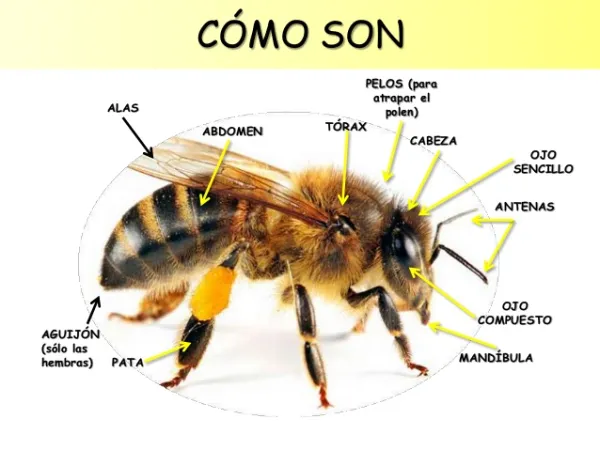

Las abejas son insectos pertenecientes al orden de los himenópteros y constituyen una parte fundamental de los ecosistemas. Son conocidas por su capacidad de polinización, un proceso esencial para la reproducción de muchas especies de plantas. Algunas características destacadas de las abejas son:
Estructura social: La mayoría de las abejas son sociales, viven en colonias organizadas que incluyen una reina, zánganos (machos) y obreras. Cada uno de estos roles cumple funciones específicas en la colonia.
Alimentación: Las abejas adultas se alimentan principalmente de néctar y polen. El néctar proporciona energía, mientras que el polen es una fuente de proteínas esencial para el desarrollo de las crías.
Polinización: Durante la recolección de néctar y polen, las abejas transportan inadvertidamente el polen de una flor a otra, lo que permite la fertilización y la producción de semillas y frutos. Esto contribuye a la diversidad y la salud de los ecosistemas, así como a la producción de alimentos.
La abeja melífera (la que elabora miel) es un artrópodo, pues tiene patas articuladas. Pertenece a la clase de los insectos.
Las principales partes del cuerpo de las abejas son: cabeza, tórax y abdomen.
En su cabeza destaca la existencia de tres ojos simples u ocelos entre los dos ojos compuestos, formados estos últimos por miles de ojos simples a su vez.
curiosamente en las antenas albergan los sentidos del tacto, olfato y oído.
también es de gran interés la probóscide, que es una estructura tubular y alargada con la que ingieren el néctar contenido en las flores.
Además, en sus patas tienen una especie de cestillos en donde van acumulando el polen que recogen cuando visitan las flores.
En su abdomen, podemos encontrar diferentes glándulas que les permiten fabricar cera, comunicarse entre ellas, etc., y el aguijón con el cual se defienden
Las abejas se agrupan en colonias llamadas enjambres y estos habitan en las colmenas. Las colmenas están formadas por panales de abejas.

Amenaza a las abejas
La producción de alimentos a nivel mundial y la biodiversidad terrestre dependen en gran medida de la polinización que realizan las abejas, un proceso natural que permite que se fecunden las flores y den así frutos y semillas. Las abejas, y otros insectos como mariposas y abejorros, son unos de los grandes responsables de este proceso y, sin embargo, sus poblaciones están disminuyendo a pasos de gigante. Entre los factores que amenazan a los polinizadores están:
La pérdida y deterioro de hábitats: La destrucción y fragmentación de los hábitats naturales de las abejas debido a la expansión urbana, la agricultura intensiva y la deforestación reducen las áreas disponibles para su alimentación y reproducción.
Las prácticas de la agricultura industrializada, como los monocultivos (menor disponibilidad y diversidad de alimento para estos insectos)
Parásitos y enfermedades: Las abejas son vulnerables a diversas enfermedades, como la varroosis, causada por el ácaro Varroa destructor. Estas enfermedades pueden diezmar colonias enteras y debilitar a las abejas, haciéndolas más susceptibles a otros factores de estrés.
Especies vegetales y animales invasoras.
Los impactos del cambio climático.
Uso de pesticidas: La exposición a pesticidas, incluidos los insecticidas neonicotinoides, puede ser letal para las abejas y afectar su capacidad de navegación, memoria y reproducción.
Como consecuencia de los anteriores factores que amenazan a las abejas, la desaparición de estas puede impedir o reducir drásticamente la polinización de plantas, lo que afectaría la producción de alimentos, tanto en cultivos comerciales como en plantas silvestres, la reproducción de muchas especies de plantas, lo que puede resultar en la pérdida de la biodiversidad y en un desequilibrio de los ecosistemas. La producción agrícola está también en riesgo, pudiendo ocasionar un fuerte impacto en la economía global, lo que a su vez tendría un impacto en la disponibilidad de alimentos y podría conducir a un aumento en los precios de los productos básicos.
Acciones para evitar su extinción:
Es fundamental tomar medidas para evitar la extinción de las abejas y proteger su hábitat. Algunas acciones importantes incluyen:
Conservación de hábitats: Preservar y restaurar áreas naturales, como praderas, bosques y humedales, proporcionar hábitats saludables para las abejas y otras especies polinizadoras.
Uso responsable de pesticidas: Promover prácticas agrícolas sostenibles que reduzcan el uso de pesticidas y fomenten alternativas más amigables con las abejas, como el control biológico y la agricultura orgánica.
Educación y concientización: Informar a la comunidad sobre la importancia de las abejas y la necesidad de protegerlas puede fomentar cambios de comportamiento en relación con el consumo de productos industrializados y de agricultura no sostenible, la plantación de especies de interés para las abejas y la creación de hábitats favorables.
Proporcionar plantas de interés para las abejas: Existen numerosas plantas que son de especial interés para las abejas debido a su alta producción de néctar y polen. Algunas de estas plantas incluyen:
Lavanda
Romero
Girasol
Naranjo dulce
Eucalipto
Especies de abejas en mayor peligro de extinción:
Las especies silvestres de abejas son las que mayor alerta han generado, ya que si bien las que producen miel en ciertas regiones están en peligro de extinción, a escala global aún se mantienen poblaciones importantes. No obstante, esto no quiere decir que no puedan estar en riesgo de desaparecer en el futuro.
Entre las especies de abejas en peligro de extinción podemos mencionar:
Abeja de la miel (Apis melifera)
Abeja albañil roja (Osmia bicornis)
Abeja cortadora de patas rojas (Bombus ruderarius)
Abeja cardadora estridente (Bombus sylvarum)
Gran abejorro amarillo (Bombus distinguendus)
Abejas del género Hylaeus (concretamente las de cara amarilla)